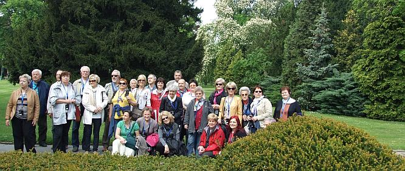
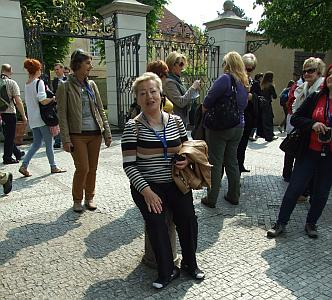
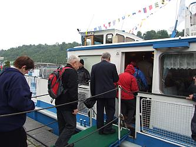
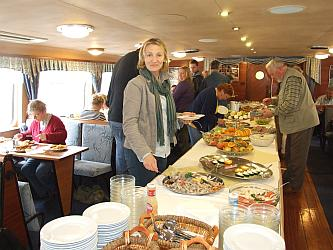

A tymczasem w Cameracie...
.
2014-05-02
Wczoraj szliśmy spać z deszczem i lodowatym wiatrem a dzisiaj … wystawiamy się do słoneczka jak leniwe kocury, oczywiście tylko w chwilach „oddechu” podczas zwiedzania. Wszyscy się cieszą z pięknej pogody, co widać. 
A jak tu pięknie.

Czekamy w kolejce, aby wejść do katedry (chyba lekko „padnięci”).
Warto było czekać, bo jest piękna.


Pięknie zastawiony stół przywitał nas na statku.
Zjedliśmy wspaniałą kolację w radosnej (jak zawsze w Cameracie) atmosferze.

I już czekamy na metro, które zawiezie nas do hotelu.
Jesteśmy zmęczeni, ale zadowoleni.

© Stowarzyszenie Muzyczne Chór Camerata Wieliczka
Projekt i wykonanie:  Prowadzenie strony: Małgorzata Wysocka-Cebula
Prowadzenie strony: Małgorzata Wysocka-Cebula